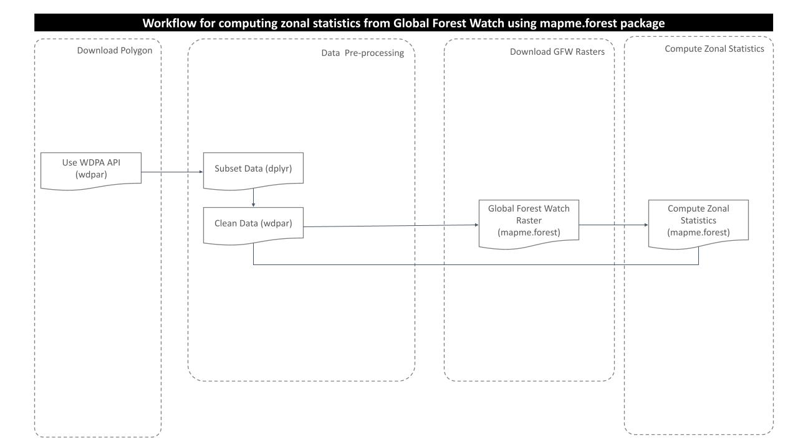
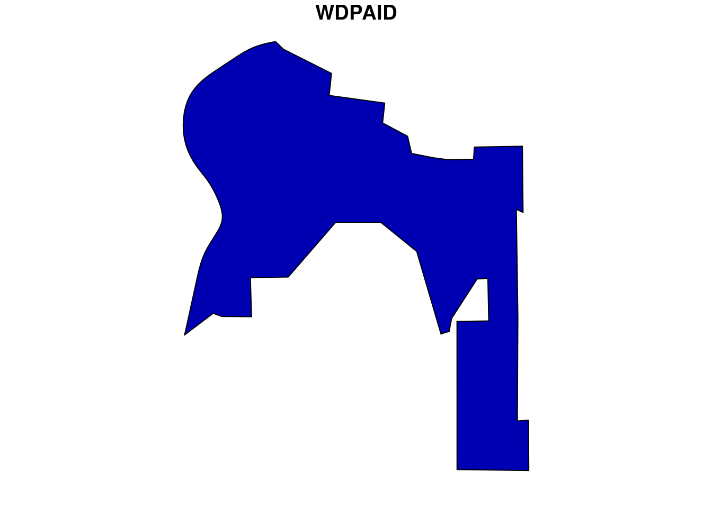
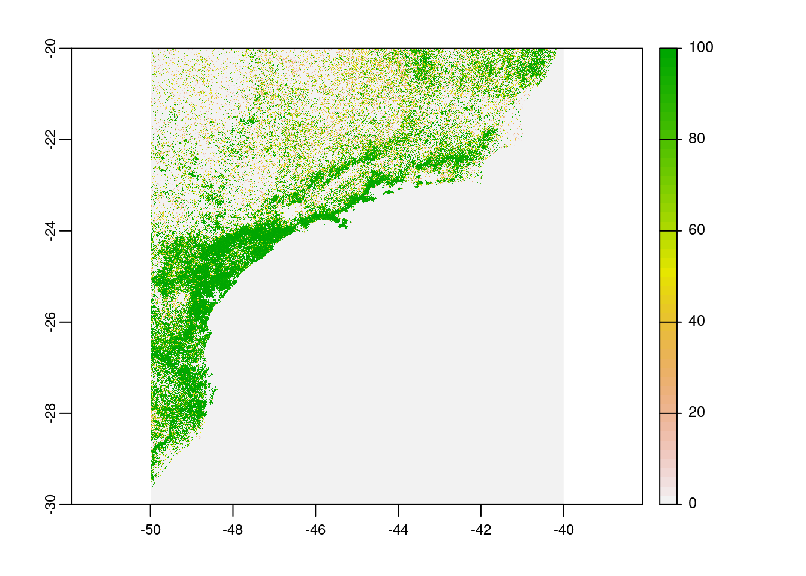
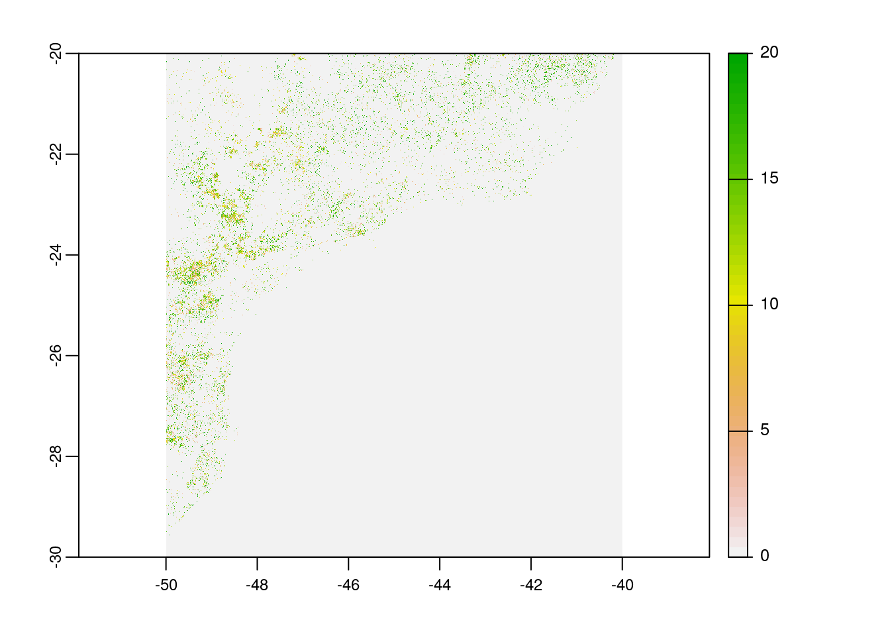
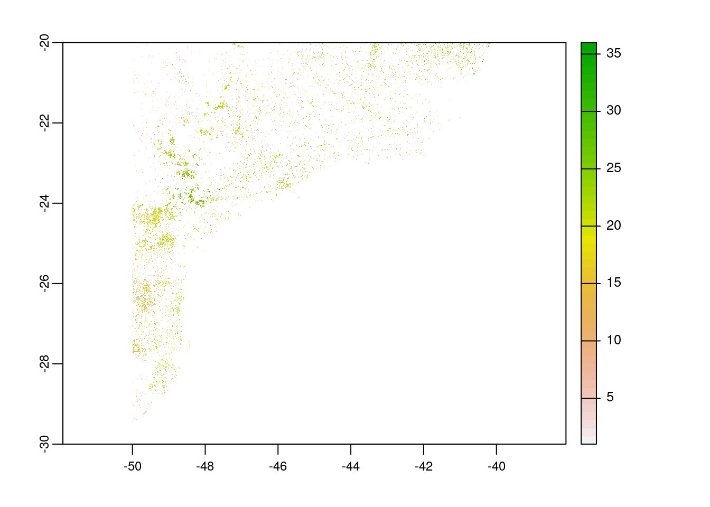

Last updated: 2021-07-01
Checks: 6 1
Knit directory: mapme.protectedareas/
This reproducible R Markdown analysis was created with workflowr (version 1.6.2). The Checks tab describes the reproducibility checks that were applied when the results were created. The Past versions tab lists the development history.
The R Markdown file has unstaged changes. To know which version of the R Markdown file created these results, you’ll want to first commit it to the Git repo. If you’re still working on the analysis, you can ignore this warning. When you’re finished, you can run wflow_publish to commit the R Markdown file and build the HTML.
Great job! The global environment was empty. Objects defined in the global environment can affect the analysis in your R Markdown file in unknown ways. For reproduciblity it’s best to always run the code in an empty environment.
The command set.seed(20210305) was run prior to running the code in the R Markdown file. Setting a seed ensures that any results that rely on randomness, e.g. subsampling or permutations, are reproducible.
Great job! Recording the operating system, R version, and package versions is critical for reproducibility.
Nice! There were no cached chunks for this analysis, so you can be confident that you successfully produced the results during this run.
Great job! Using relative paths to the files within your workflowr project makes it easier to run your code on other machines.
Great! You are using Git for version control. Tracking code development and connecting the code version to the results is critical for reproducibility.
The results in this page were generated with repository version a154e76. See the Past versions tab to see a history of the changes made to the R Markdown and HTML files.
Note that you need to be careful to ensure that all relevant files for the analysis have been committed to Git prior to generating the results (you can use wflow_publish or wflow_git_commit). workflowr only checks the R Markdown file, but you know if there are other scripts or data files that it depends on. Below is the status of the Git repository when the results were generated:
Ignored files:
Ignored: .Rproj.user/
Unstaged changes:
Modified: analysis/gfw.rmd
Note that any generated files, e.g. HTML, png, CSS, etc., are not included in this status report because it is ok for generated content to have uncommitted changes.
These are the previous versions of the repository in which changes were made to the R Markdown (analysis/gfw.rmd) and HTML (docs/gfw.html) files. If you’ve configured a remote Git repository (see ?wflow_git_remote), click on the hyperlinks in the table below to view the files as they were in that past version.
| File | Version | Author | Date | Message |
|---|---|---|---|---|
| html | fa42f34 | Johannes Schielein | 2021-07-01 | Host with GitHub. |
| html | 7de9975 | Om Bandhari | 2021-06-30 | gfw html for index file |
| Rmd | de24570 | Om Bandhari | 2021-06-30 | create gfw rmd analysis |
# load required libraries
#remotes::install_github("mapme-initiative/mapme.forest")
library("mapme.forest")
library("sf")
library("terra")
library("wdpar")
library("dplyr")
library("rmarkdown") # only used for rendering tables for this website
starttime<-Sys.time() # mark the start time of this routine to calculate processing time at the endMaps for Planning, Monitoring and Evaluation (MAPME) is a joint initiative by KfW, MapTailor Geospatial Consulting GbR, and Agence Française de Développement (AFD). MAPME is an open framework that develops and promotes open source data and tools for the relevant project management stages. It consists of the following core components: (i) Good practice guidance that describes workflows for using remote sensing data and products for planning, monitoring and evaluation (ii) Project-related support with remote sensing analyses. Open source code and tools provided via open code repositories (iii) User-tailored trainings. More information can be found on the MAPME project homepage.
In this analysis section, we are going to download and analyse Global Forest Watch datasets using mapme.forest package.
Global Forest Watch makes available global data products produced by Hansen et al (2018) by examining Landsat satellite data to characterize global forest extent, annual loss, and gain.
We can find following data layers in the GFW data set:
Treecover2000: This layer gives the tree canopy cover for year 2000, defined as canopy closure for all vegetation taller than 5m in height, measured in percentage ranging from 0 to 100 percent.
Loss: This layer gives the tree cover loss during the study period, defined as a complete stand-replacement disturbance (i.e., a change from a forest to non-forest state).
Gain: Tree cover gain summarized during the period 2000–2012, defined as the inverse of the information contained in the ‘Loss’ layer (a non-forest to forest change entirely within the study period).
Lossyear: Year of gross tree cover loss event. Tree cover loss during the study period, defined as a stand-replacement disturbance, or a change from a forest to non-forest state. Encoded as either 0 (no loss) or else a value in the range 1–20, representing loss detected primarily in the year 2001–2020.
The purpose of this analysis is to compute tree cover, loss year and co2 emission from the global forest watch rasters. For this, following processing routine is followed:

For this analysis, we would choose one WDPA polygon from the country Brazil. We can download the WDPA polygons from the package wdpar and then filter out the desired polygon using WDPAID with package dplyr. We will then reproject the downloaded polygon sample to WGS84.
# load sample WDPA polygon from country: Brazil
br <- wdpa_fetch("BRA")%>%
filter(WDPAID %in% 16078)
# reproject to the WGS84
br <- st_transform(br,
"+proj=longlat +datum=WGS84 +no_defs")
# plot the polygon
plot(br[1])
| Version | Author | Date |
|---|---|---|
| 65d7a87 | Om Bandhari | 2021-06-30 |
From the package mapme.forest we will now download the global forest watch rasters for the year 2020 (which is the latest update) using function downloadGFW. The script below download the three rasters i.e. tree cover 2000, loss year, and CO2 emission.
# download GFW data for the area of interest (latest rasters)
raster_files = downloadfGFW(shape = br,
basename = "",
dataset = "GFC-2020-v1.8",
outdir = paste0(tempdir(),"/global_forest_watch/"),
keepTmpFiles = F)
# plot tree cover
plot(rast(paste0(tempdir(),"/global_forest_watch/_treecover2000.tif")))
| Version | Author | Date |
|---|---|---|
| 65d7a87 | Om Bandhari | 2021-06-30 |
# plot loss year
plot(rast(paste0(tempdir(),"/global_forest_watch/_lossyear.tif")))
| Version | Author | Date |
|---|---|---|
| 65d7a87 | Om Bandhari | 2021-06-30 |
# plot co2 emission
plot(rast(paste0(tempdir(),"/global_forest_watch/_co2_emission_.tif")))
| Version | Author | Date |
|---|---|---|
| 65d7a87 | Om Bandhari | 2021-06-30 |
Now, we have already prepared polygon and raster data, we will compute zonal statistics using function statsGRASS from package mapme.forest.
First of all, we should get path to those downloaded rasters in the temporary directory.
# get the file paths to the raster files
treeCover = paste0(tempdir(),"/global_forest_watch/_treecover2000.tif")
lossYear = paste0(tempdir(),"/global_forest_watch/_lossyear.tif")
co2Layer = paste0(tempdir(),"/global_forest_watch/_co2_emission_.tif")Since the function statsGRASS is based on GRASS, we should provide path to the working installation of GRASS GIS version >=7.0.0.
grass = "/usr/lib/grass78"The function statsGRASS requires few arguments:
r.area addon, if not found, installs automaticallyzonal_stats = statsGRASS(grass = grass,
addon_base = "./data-raw/addons",
areas = br,
tree_cover = treeCover,
tree_loss = lossYear,
tree_co2 = co2Layer,
idcol = "WDPA_PID",
thresholdClump = 6,
thresholdCover = 10,
years = 2001:2020,
saveRaster = F,
hideoutput = T)Now, we can have a look at the zonal statistics result.
# view area statistics from year 2000 to 2020
paged_table(zonal_stats[30:50])# view area loss statistics from year 2000 to 2020
paged_table(zonal_stats[51:71])# view CO2 emission statistics from year 2000 to 2020
paged_table(zonal_stats[72:92])In the end we are going to have a look how long the rendering of this file took to get an idea about the processing speed of this routine.
stoptime<-Sys.time()
print(starttime-stoptime)Time difference of -2.212892 mins
sessionInfo()R version 3.6.3 (2020-02-29)
Platform: x86_64-pc-linux-gnu (64-bit)
Running under: Ubuntu 18.04.5 LTS
Matrix products: default
BLAS: /usr/lib/x86_64-linux-gnu/blas/libblas.so.3.7.1
LAPACK: /usr/lib/x86_64-linux-gnu/lapack/liblapack.so.3.7.1
locale:
[1] LC_CTYPE=C.UTF-8 LC_NUMERIC=C LC_TIME=C.UTF-8
[4] LC_COLLATE=C.UTF-8 LC_MONETARY=C.UTF-8 LC_MESSAGES=C.UTF-8
[7] LC_PAPER=C.UTF-8 LC_NAME=C LC_ADDRESS=C
[10] LC_TELEPHONE=C LC_MEASUREMENT=C.UTF-8 LC_IDENTIFICATION=C
attached base packages:
[1] stats graphics grDevices utils datasets methods base
other attached packages:
[1] rmarkdown_2.6 dplyr_1.0.7 wdpar_1.0.6 terra_1.2-15
[5] sf_1.0-1 mapme.forest_1.0
loaded via a namespace (and not attached):
[1] httr_1.4.2 tidyr_1.1.3 jsonlite_1.7.2
[4] R.utils_2.10.1 binman_0.1.2 assertthat_0.2.1
[7] askpass_1.1 wdman_0.2.5 countrycode_1.2.0
[10] sp_1.4-5 RSelenium_1.7.7 yaml_2.2.1
[13] pillar_1.6.1 lattice_0.20-44 glue_1.4.2
[16] exactextractr_0.6.1 digest_0.6.27 promises_1.2.0.1
[19] SDMTools_1.1-221 htmltools_0.5.1.1 httpuv_1.6.1
[22] R.oo_1.24.0 XML_3.99-0.3 pkgconfig_2.0.3
[25] raster_3.4-13 s2_1.0.6 purrr_0.3.4
[28] processx_3.5.2 whisker_0.4 later_1.2.0
[31] openssl_1.4.4 git2r_0.28.0 tibble_3.1.2
[34] proxy_0.4-26 generics_0.1.0 ellipsis_0.3.2
[37] rgrass7_0.2-5 magrittr_2.0.1 crayon_1.4.1
[40] evaluate_0.14 ps_1.5.0 R.methodsS3_1.8.1
[43] fs_1.5.0 fansi_0.5.0 xml2_1.3.2
[46] class_7.3-19 tools_3.6.3 lifecycle_1.0.0
[49] extraDistr_1.9.1 stringr_1.4.0 compiler_3.6.3
[52] e1071_1.7-7 caTools_1.18.1 rlang_0.4.11
[55] classInt_0.4-3 units_0.7-2 grid_3.6.3
[58] rappdirs_0.3.3 igraph_1.2.6 bitops_1.0-6
[61] wk_0.4.1 codetools_0.2-18 DBI_1.1.1
[64] curl_4.3.2 R6_2.5.0 rgdal_1.5-23
[67] knitr_1.30 utf8_1.2.1 workflowr_1.6.2
[70] rprojroot_2.0.2 KernSmooth_2.23-20 semver_0.2.0
[73] trend_1.1.4 stringi_1.6.2 parallel_3.6.3
[76] Rcpp_1.0.6 vctrs_0.3.8 tidyselect_1.1.1
[79] xfun_0.20